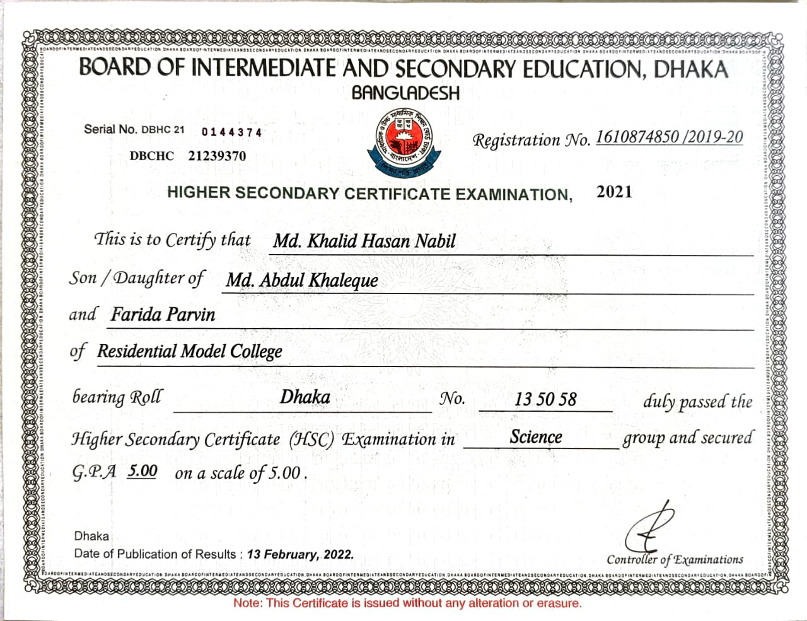
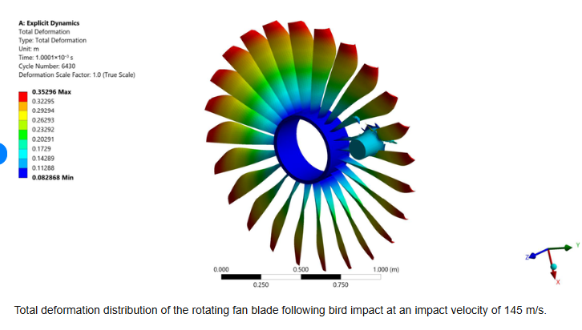
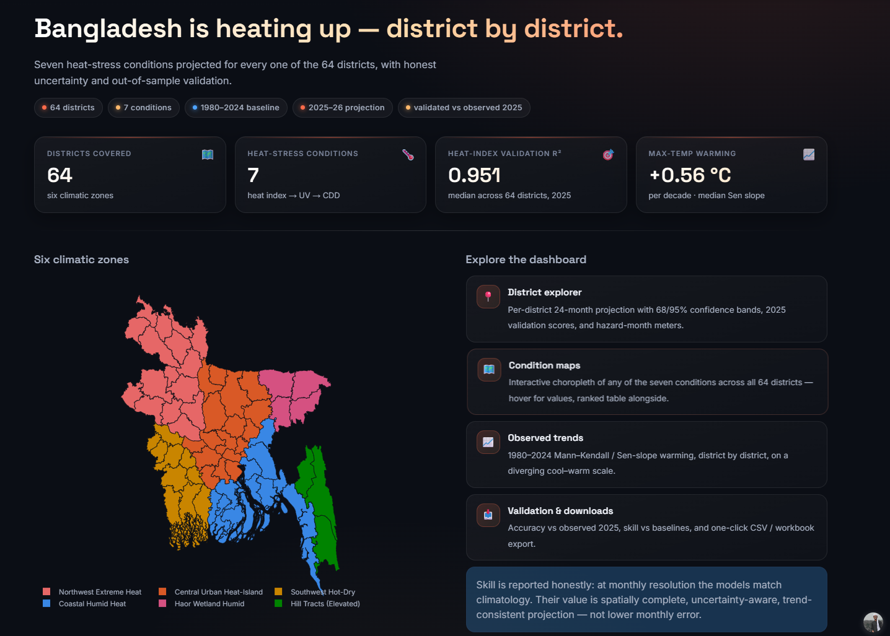
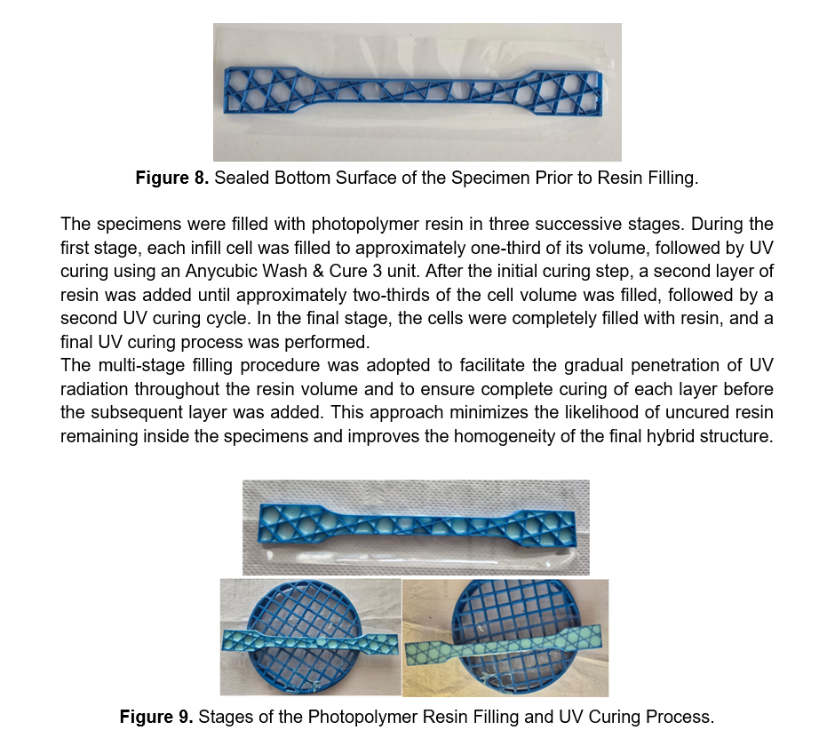
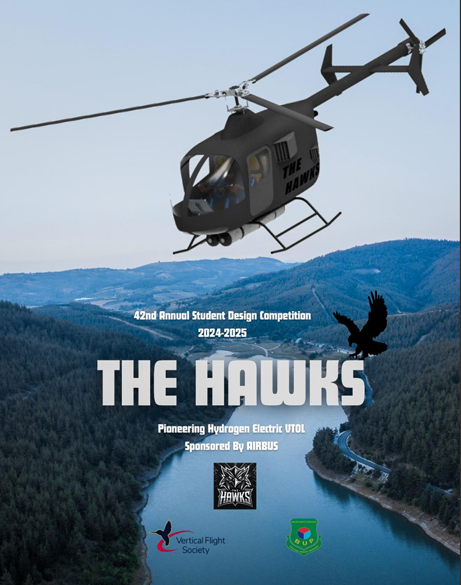
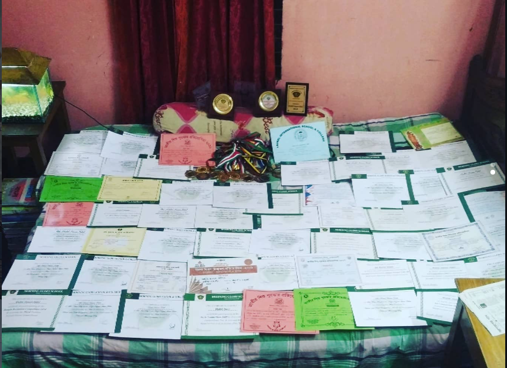

BSc in Information and Communication Engineering
Result: 3.38/4.00
Issued: expected 2028
Bangladesh University of Professionals (BUP)
Student
BSc in Information and Communication Engineering, BUP
Result: 3.38/4.00
Issued: expected 2028
Bangladesh University of Professionals (BUP)

Result: 5.00/5.00
Issued: December, 2021
Dhaka Residential Model College
Result: 5.00/5.00
Issued: July, 2019
Savar Cantonment Morning Glory School & College

My research started with one idea: use machine learning to model physical systems that are hard to solve with equations alone. My first published work applied physics-guided ML to bird-strike analysis on jet-engine blades, comparing Lagrangian and SPH methods, in collaboration with Dr. Ivan Grgić, Mechanical Engineering Faculty in Slavonski Brod. That project set the direction for everything after it and getting my first Journal published in MDPI Modelling.

From there I moved into environmental forecasting.Under the supervision of Atika Akhter, Institute of Biological and Medical Imaging, Germany and Dr. Ali Moni, Faculty of Health and Behavioural Sciences, The University of Queensland I built a Fourier-guided ML framework to predict 8 Temperature Correlated Conditions (TCC) conditions across all 64 districts of Bangladesh, combining signal-based features with ensemble learning to capture seasonal patterns(currently under review). This grew into a series of first-author papers, including one accepted at IOCFC 2026.

I then carried the same modeling approach into additive manufacturing building a model to predict the ultimate tensile strength of 3D-printed parts from print parameters with Jure Marijić under the supervision of Dr. Ivan Grgić but couldn't execute the work after working for 7 months in it failing to overcome the limited dataset, but later contributed in data analysis and manuscript drafting to an another experimental work on infill design accepted at PLIN 2026, in Croatia.
I am now extending the same deep-learning tools and experimenting with Knowledge Distillation to a new domain in my undergraduate thesis: medical image processing under the supervision of Md Appel Mahmud Pranto, Faculty of Science & Technology in BUP.

Under the supervision of Dr. Nasir Uddin, Faculty of Science & Technology in BUP,
I led a 7-member team — five aeronautical engineering students and two from ICT in the 42nd
VFS Annual Student Design Competition, an international VTOL aircraft design challenge.
As team lead, my work was research and problem-solving: I broke down the problem statement,
set the technical concept, drafted the full manuscript, and assigned tasks to our simulation
and CAD specialists.
The challenge required a hydrogen-powered VTOL design. I spent the first days turning the
requirements into a structured map, then proposed our core concept a hybrid drawing on the
Guimbal Cabri G2 and Robinson R22. My main technical contribution was the propulsion research:
after deep study of fuel-cell systems, I selected and justified a PEMFC powertrain based on the
Toyota Mirai's fuel-cell architecture for integration into our aircraft.
This project is where I taught myself to read research papers properly and learned to carry
a problem from a blank statement to a complete technical submission while coordinating an
interdisciplinary team. Full documentation is on GitHub.
Authors: Mohammad Khalid Hasan Nabil, Jubayer Ahmed Sajid, Ivan Grgić, Jure Marijić, Saiaf Bin Rayhan
Authors: Mohammad Khalid Hasan Nabil, Tahia Parsha, Musayeb Hossain Usama, Atika Akter, Ivan Grgić, Mohammad Ali Moni
Authors: Mohammad Khalid Hasan Nabil, Nusrat, Ivan Grgić, Mainul Islam
Authors: Mohammad Khalid Hasan Nabil, Ivan Grgić
Authors: L. Brčić, I. Grgić, J. Marijić, M. Karakašić, M. K. H. Nabil
Student Design Competition(Best New Entrant)

A brief overview of my co-curricular journey: